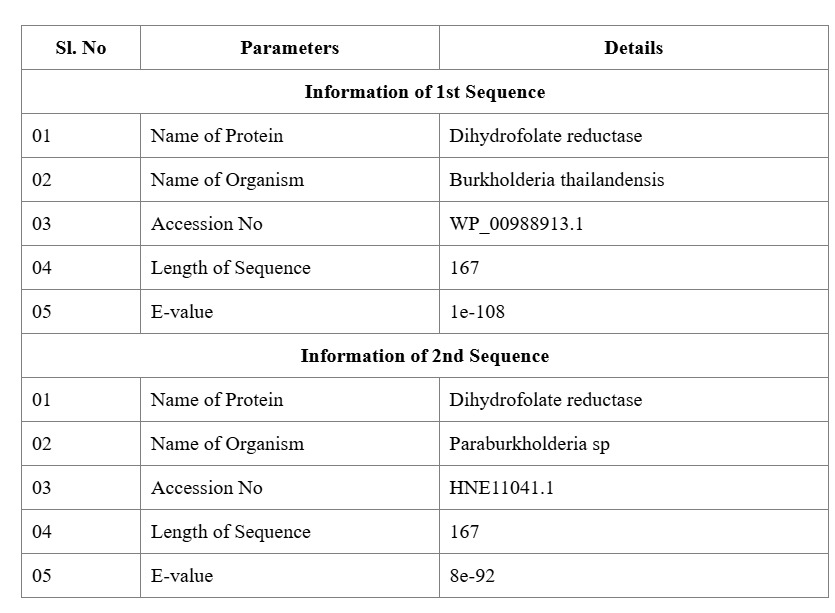
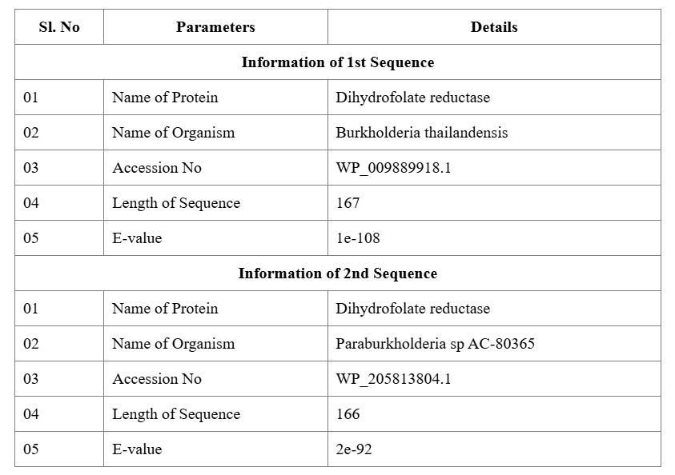
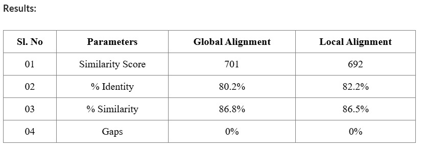
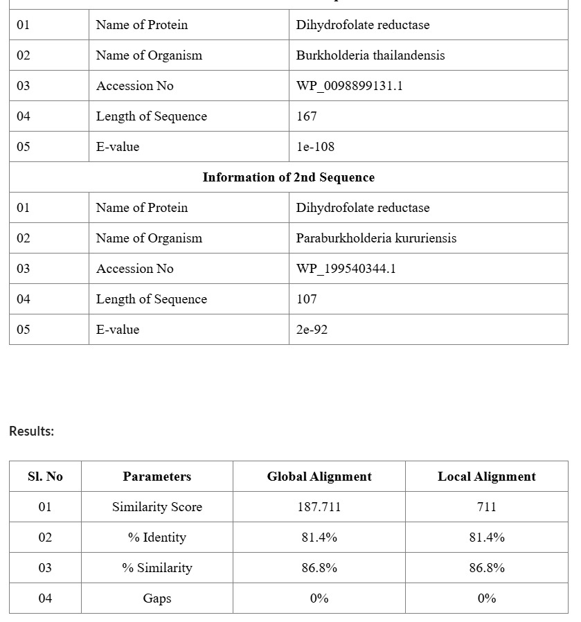
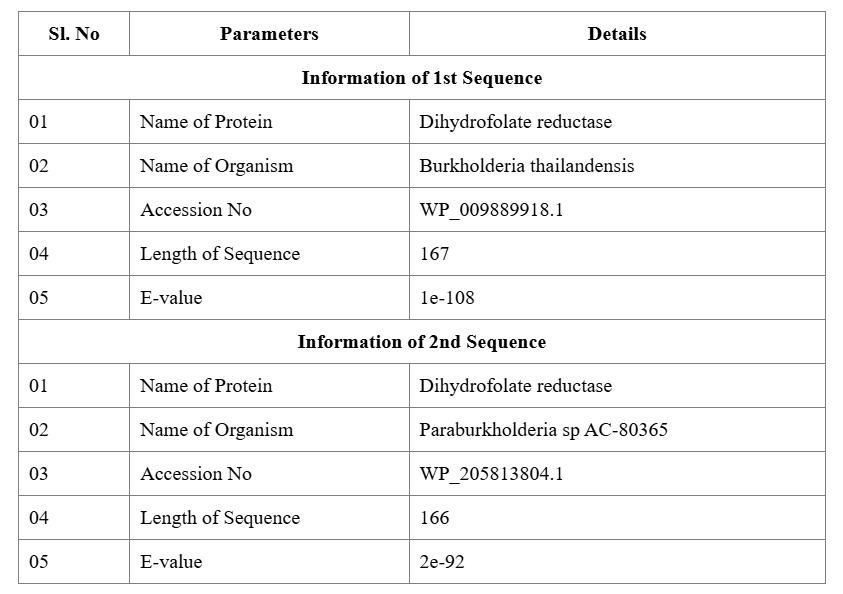
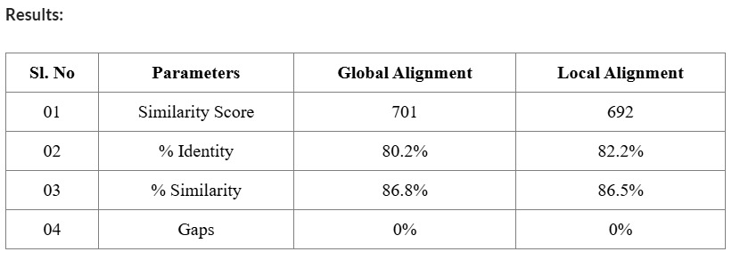
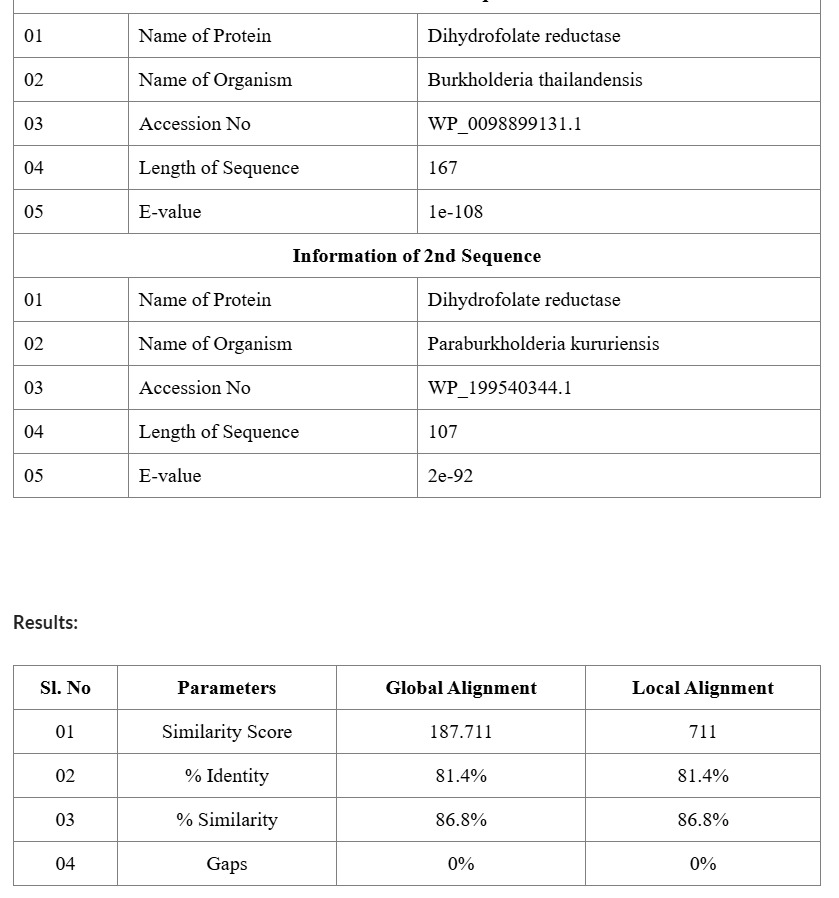
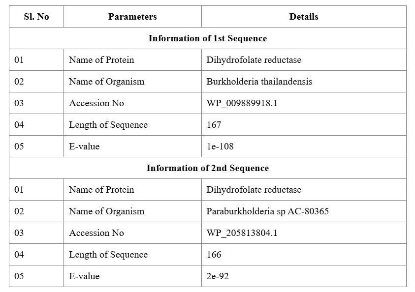
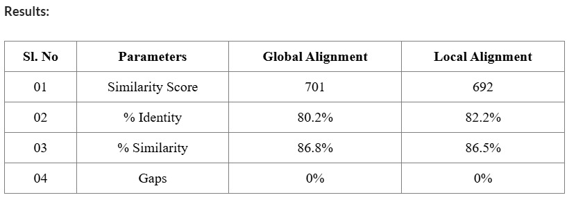
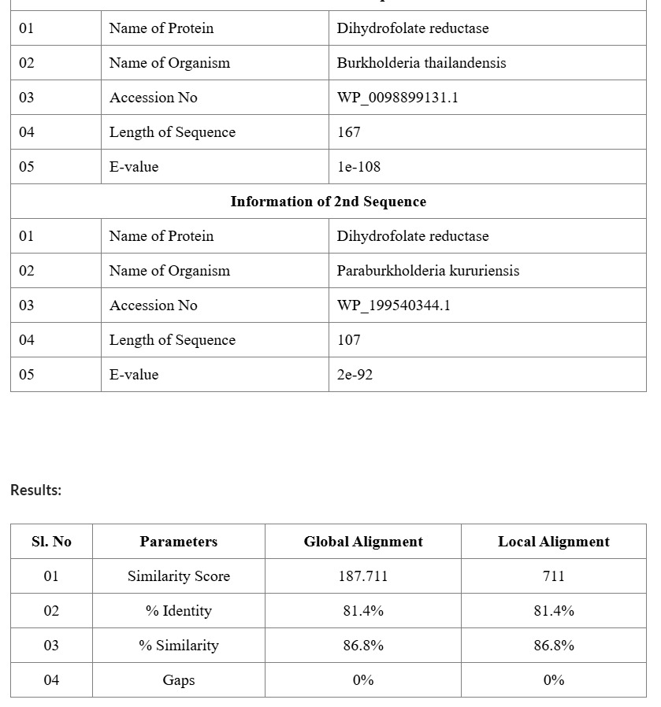

Experiment 3
Searching Sequence Databases Using BLAST Algorithm and Pairwise Alignment of the Sequences
Aim & Objectives
Aim
To identify sequence similarity using the BLAST algorithm and perform pairwise alignment of nucleotide and protein sequences.
Objectives
- To study the pairwise sequence similarity and extract homologous sequence using BLAST algorithm.
- To perform global sequence alignment between two nucleotide acid sequence and find out structural and functional similarity.
Principle
BLAST (Basic Local Alignment Search Tool) compares a query sequence against database sequences to identify regions of local similarity. Pairwise alignment aligns two sequences to identify conserved regions, mutations, and evolutionary relationships. Statistical parameters determine the significance of the alignment.
Output

 







